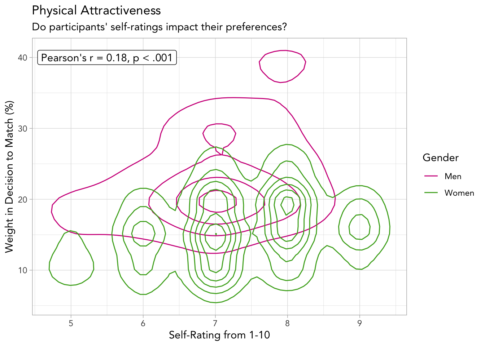

iid id gender idg
Min. : 1.0 Min. : 1.00 Min. :0.0000 Min. : 1.00
1st Qu.:154.0 1st Qu.: 4.00 1st Qu.:0.0000 1st Qu.: 8.00
Median :281.0 Median : 8.00 Median :1.0000 Median :16.00
Mean :283.7 Mean : 8.96 Mean :0.5006 Mean :17.33
3rd Qu.:407.0 3rd Qu.:13.00 3rd Qu.:1.0000 3rd Qu.:26.00
Max. :552.0 Max. :22.00 Max. :1.0000 Max. :44.00
NA's :1
condtn wave round position
Min. :1.000 Min. : 1.00 Min. : 5.00 Min. : 1.000
1st Qu.:2.000 1st Qu.: 7.00 1st Qu.:14.00 1st Qu.: 4.000
Median :2.000 Median :11.00 Median :18.00 Median : 8.000
Mean :1.829 Mean :11.35 Mean :16.87 Mean : 9.043
3rd Qu.:2.000 3rd Qu.:15.00 3rd Qu.:20.00 3rd Qu.:13.000
Max. :2.000 Max. :21.00 Max. :22.00 Max. :22.000
positin1 order partner pid
Min. : 1.000 Min. : 1.000 Min. : 1.000 Min. : 1.0
1st Qu.: 4.000 1st Qu.: 4.000 1st Qu.: 4.000 1st Qu.:154.0
Median : 9.000 Median : 8.000 Median : 8.000 Median :281.0
Mean : 9.296 Mean : 8.928 Mean : 8.964 Mean :283.9
3rd Qu.:14.000 3rd Qu.:13.000 3rd Qu.:13.000 3rd Qu.:408.0
Max. :22.000 Max. :22.000 Max. :22.000 Max. :552.0
NA's :1846 NA's :10
match int_corr samerace age_o
Min. :0.0000 Min. :-0.830 Min. :0.0000 Min. :18.00
1st Qu.:0.0000 1st Qu.:-0.020 1st Qu.:0.0000 1st Qu.:24.00
Median :0.0000 Median : 0.210 Median :0.0000 Median :26.00
Mean :0.1647 Mean : 0.196 Mean :0.3958 Mean :26.36
3rd Qu.:0.0000 3rd Qu.: 0.430 3rd Qu.:1.0000 3rd Qu.:28.00
Max. :1.0000 Max. : 0.910 Max. :1.0000 Max. :55.00
NA's :158 NA's :104
race_o pf_o_att pf_o_sin pf_o_int
Min. :1.000 Min. : 0.0 Min. : 0.00 Min. : 0.00
1st Qu.:2.000 1st Qu.: 15.0 1st Qu.:15.00 1st Qu.:17.39
Median :2.000 Median : 20.0 Median :18.37 Median :20.00
Mean :2.757 Mean : 22.5 Mean :17.40 Mean :20.27
3rd Qu.:4.000 3rd Qu.: 25.0 3rd Qu.:20.00 3rd Qu.:23.81
Max. :6.000 Max. :100.0 Max. :60.00 Max. :50.00
NA's :73 NA's :89 NA's :89 NA's :89
pf_o_fun pf_o_amb pf_o_sha dec_o
Min. : 0.00 Min. : 0.00 Min. : 0.00 Min. :0.0000
1st Qu.:15.00 1st Qu.: 5.00 1st Qu.: 9.52 1st Qu.:0.0000
Median :18.00 Median :10.00 Median :10.64 Median :0.0000
Mean :17.46 Mean :10.69 Mean :11.85 Mean :0.4196
3rd Qu.:20.00 3rd Qu.:15.00 3rd Qu.:16.00 3rd Qu.:1.0000
Max. :50.00 Max. :53.00 Max. :30.00 Max. :1.0000
NA's :98 NA's :107 NA's :129
attr_o sinc_o intel_o fun_o
Min. : 0.00 Min. : 0.000 Min. : 0.000 Min. : 0.000
1st Qu.: 5.00 1st Qu.: 6.000 1st Qu.: 6.000 1st Qu.: 5.000
Median : 6.00 Median : 7.000 Median : 7.000 Median : 7.000
Mean : 6.19 Mean : 7.175 Mean : 7.369 Mean : 6.401
3rd Qu.: 8.00 3rd Qu.: 8.000 3rd Qu.: 8.000 3rd Qu.: 8.000
Max. :10.50 Max. :10.000 Max. :10.000 Max. :11.000
NA's :212 NA's :287 NA's :306 NA's :360
amb_o shar_o like_o prob_o
Min. : 0.000 Min. : 0.000 Min. : 0.000 Min. : 0.000
1st Qu.: 6.000 1st Qu.: 4.000 1st Qu.: 5.000 1st Qu.: 4.000
Median : 7.000 Median : 6.000 Median : 6.000 Median : 5.000
Mean : 6.778 Mean : 5.475 Mean : 6.135 Mean : 5.208
3rd Qu.: 8.000 3rd Qu.: 7.000 3rd Qu.: 7.000 3rd Qu.: 7.000
Max. :10.000 Max. :10.000 Max. :10.000 Max. :10.000
NA's :722 NA's :1076 NA's :250 NA's :318
met_o age field field_cd
Min. :1.00 Min. :18.00 Length:8378 Min. : 1.000
1st Qu.:2.00 1st Qu.:24.00 Class :character 1st Qu.: 5.000
Median :2.00 Median :26.00 Mode :character Median : 8.000
Mean :1.96 Mean :26.36 Mean : 7.662
3rd Qu.:2.00 3rd Qu.:28.00 3rd Qu.:10.000
Max. :8.00 Max. :55.00 Max. :18.000
NA's :385 NA's :95 NA's :82
undergra mn_sat tuition race
Length:8378 Length:8378 Length:8378 Min. :1.000
Class :character Class :character Class :character 1st Qu.:2.000
Mode :character Mode :character Mode :character Median :2.000
Mean :2.757
3rd Qu.:4.000
Max. :6.000
NA's :63
imprace imprelig from zipcode
Min. : 0.000 Min. : 1.000 Length:8378 Length:8378
1st Qu.: 1.000 1st Qu.: 1.000 Class :character Class :character
Median : 3.000 Median : 3.000 Mode :character Mode :character
Mean : 3.785 Mean : 3.652
3rd Qu.: 6.000 3rd Qu.: 6.000
Max. :10.000 Max. :10.000
NA's :79 NA's :79
income goal date go_out
Length:8378 Min. :1.000 Min. :1.000 Min. :1.000
Class :character 1st Qu.:1.000 1st Qu.:4.000 1st Qu.:1.000
Mode :character Median :2.000 Median :5.000 Median :2.000
Mean :2.122 Mean :5.007 Mean :2.158
3rd Qu.:2.000 3rd Qu.:6.000 3rd Qu.:3.000
Max. :6.000 Max. :7.000 Max. :7.000
NA's :79 NA's :97 NA's :79
career career_c sports tvsports
Length:8378 Min. : 1.000 Min. : 1.000 Min. : 1.000
Class :character 1st Qu.: 2.000 1st Qu.: 4.000 1st Qu.: 2.000
Mode :character Median : 6.000 Median : 7.000 Median : 4.000
Mean : 5.278 Mean : 6.425 Mean : 4.575
3rd Qu.: 7.000 3rd Qu.: 9.000 3rd Qu.: 7.000
Max. :17.000 Max. :10.000 Max. :10.000
NA's :138 NA's :79 NA's :79
exercise dining museums art
Min. : 1.000 Min. : 1.000 Min. : 0.000 Min. : 0.000
1st Qu.: 5.000 1st Qu.: 7.000 1st Qu.: 6.000 1st Qu.: 5.000
Median : 6.000 Median : 8.000 Median : 7.000 Median : 7.000
Mean : 6.246 Mean : 7.784 Mean : 6.986 Mean : 6.715
3rd Qu.: 8.000 3rd Qu.: 9.000 3rd Qu.: 9.000 3rd Qu.: 8.000
Max. :10.000 Max. :10.000 Max. :10.000 Max. :10.000
NA's :79 NA's :79 NA's :79 NA's :79
hiking gaming clubbing reading
Min. : 0.000 Min. : 0.000 Min. : 0.000 Min. : 1.000
1st Qu.: 4.000 1st Qu.: 2.000 1st Qu.: 4.000 1st Qu.: 7.000
Median : 6.000 Median : 3.000 Median : 6.000 Median : 8.000
Mean : 5.737 Mean : 3.881 Mean : 5.746 Mean : 7.679
3rd Qu.: 8.000 3rd Qu.: 6.000 3rd Qu.: 8.000 3rd Qu.: 9.000
Max. :10.000 Max. :14.000 Max. :10.000 Max. :13.000
NA's :79 NA's :79 NA's :79 NA's :79
tv theater movies concerts
Min. : 1.000 Min. : 0.000 Min. : 0.00 Min. : 0.000
1st Qu.: 3.000 1st Qu.: 5.000 1st Qu.: 7.00 1st Qu.: 5.000
Median : 6.000 Median : 7.000 Median : 8.00 Median : 7.000
Mean : 5.304 Mean : 6.776 Mean : 7.92 Mean : 6.825
3rd Qu.: 7.000 3rd Qu.: 9.000 3rd Qu.: 9.00 3rd Qu.: 8.000
Max. :10.000 Max. :10.000 Max. :10.00 Max. :10.000
NA's :79 NA's :79 NA's :79 NA's :79
music shopping yoga exphappy
Min. : 1.000 Min. : 1.000 Min. : 0.000 Min. : 1.000
1st Qu.: 7.000 1st Qu.: 4.000 1st Qu.: 2.000 1st Qu.: 5.000
Median : 8.000 Median : 6.000 Median : 4.000 Median : 6.000
Mean : 7.851 Mean : 5.631 Mean : 4.339 Mean : 5.534
3rd Qu.: 9.000 3rd Qu.: 8.000 3rd Qu.: 7.000 3rd Qu.: 7.000
Max. :10.000 Max. :10.000 Max. :10.000 Max. :10.000
NA's :79 NA's :79 NA's :79 NA's :101
expnum attr1_1 sinc1_1 intel1_1
Min. : 0.000 Min. : 0.00 Min. : 0.00 Min. : 0.00
1st Qu.: 2.000 1st Qu.: 15.00 1st Qu.:15.00 1st Qu.:17.39
Median : 4.000 Median : 20.00 Median :18.18 Median :20.00
Mean : 5.571 Mean : 22.51 Mean :17.40 Mean :20.27
3rd Qu.: 8.000 3rd Qu.: 25.00 3rd Qu.:20.00 3rd Qu.:23.81
Max. :20.000 Max. :100.00 Max. :60.00 Max. :50.00
NA's :6578 NA's :79 NA's :79 NA's :79
fun1_1 amb1_1 shar1_1 attr4_1
Min. : 0.00 Min. : 0.00 Min. : 0.00 Min. : 5.00
1st Qu.:15.00 1st Qu.: 5.00 1st Qu.: 9.52 1st Qu.:10.00
Median :18.00 Median :10.00 Median :10.64 Median :25.00
Mean :17.46 Mean :10.68 Mean :11.85 Mean :26.39
3rd Qu.:20.00 3rd Qu.:15.00 3rd Qu.:16.00 3rd Qu.:35.00
Max. :50.00 Max. :53.00 Max. :30.00 Max. :95.00
NA's :89 NA's :99 NA's :121 NA's :1889
sinc4_1 intel4_1 fun4_1 amb4_1
Min. : 0.00 Min. : 0.00 Min. : 0.00 Min. : 0.00
1st Qu.: 6.00 1st Qu.: 8.00 1st Qu.:10.00 1st Qu.: 5.00
Median :10.00 Median :10.00 Median :15.00 Median :10.00
Mean :11.07 Mean :12.64 Mean :15.57 Mean : 9.78
3rd Qu.:15.00 3rd Qu.:16.00 3rd Qu.:20.00 3rd Qu.:15.00
Max. :35.00 Max. :35.00 Max. :45.00 Max. :50.00
NA's :1889 NA's :1889 NA's :1889 NA's :1889
shar4_1 attr2_1 sinc2_1 intel2_1
Min. : 0.00 Min. : 0.00 Min. : 0.00 Min. : 0.00
1st Qu.: 7.00 1st Qu.: 20.00 1st Qu.:10.00 1st Qu.:10.00
Median :10.00 Median : 25.00 Median :15.00 Median :15.00
Mean :11.01 Mean : 30.36 Mean :13.27 Mean :14.42
3rd Qu.:15.00 3rd Qu.: 40.00 3rd Qu.:18.75 3rd Qu.:20.00
Max. :40.00 Max. :100.00 Max. :50.00 Max. :40.00
NA's :1911 NA's :79 NA's :79 NA's :79
fun2_1 amb2_1 shar2_1 attr3_1
Min. : 0.00 Min. : 0.00 Min. : 0.00 Min. : 2.000
1st Qu.:15.00 1st Qu.: 6.00 1st Qu.:10.00 1st Qu.: 6.000
Median :20.00 Median :10.00 Median :10.00 Median : 7.000
Mean :18.42 Mean :11.74 Mean :11.85 Mean : 7.085
3rd Qu.:20.00 3rd Qu.:15.00 3rd Qu.:15.63 3rd Qu.: 8.000
Max. :50.00 Max. :50.00 Max. :30.00 Max. :10.000
NA's :79 NA's :89 NA's :89 NA's :105
sinc3_1 fun3_1 intel3_1 amb3_1
Min. : 2.000 Min. : 2.000 Min. : 3.000 Min. : 2.000
1st Qu.: 8.000 1st Qu.: 7.000 1st Qu.: 8.000 1st Qu.: 7.000
Median : 8.000 Median : 8.000 Median : 8.000 Median : 8.000
Mean : 8.295 Mean : 7.704 Mean : 8.404 Mean : 7.578
3rd Qu.: 9.000 3rd Qu.: 9.000 3rd Qu.: 9.000 3rd Qu.: 9.000
Max. :10.000 Max. :10.000 Max. :10.000 Max. :10.000
NA's :105 NA's :105 NA's :105 NA's :105
attr5_1 sinc5_1 intel5_1 fun5_1
Min. : 2.000 Min. : 1.000 Min. : 3.000 Min. : 2.000
1st Qu.: 6.000 1st Qu.: 7.000 1st Qu.: 8.000 1st Qu.: 6.000
Median : 7.000 Median : 8.000 Median : 8.000 Median : 8.000
Mean : 6.942 Mean : 7.927 Mean : 8.284 Mean : 7.426
3rd Qu.: 8.000 3rd Qu.: 9.000 3rd Qu.: 9.000 3rd Qu.: 9.000
Max. :10.000 Max. :10.000 Max. :10.000 Max. :10.000
NA's :3472 NA's :3472 NA's :3472 NA's :3472
amb5_1 dec attr sinc
Min. : 1.000 Min. :0.0000 Min. : 0.00 Min. : 0.000
1st Qu.: 7.000 1st Qu.:0.0000 1st Qu.: 5.00 1st Qu.: 6.000
Median : 8.000 Median :0.0000 Median : 6.00 Median : 7.000
Mean : 7.618 Mean :0.4199 Mean : 6.19 Mean : 7.175
3rd Qu.: 9.000 3rd Qu.:1.0000 3rd Qu.: 8.00 3rd Qu.: 8.000
Max. :10.000 Max. :1.0000 Max. :10.00 Max. :10.000
NA's :3472 NA's :202 NA's :277
intel fun amb shar
Min. : 0.000 Min. : 0.000 Min. : 0.000 Min. : 0.000
1st Qu.: 6.000 1st Qu.: 5.000 1st Qu.: 6.000 1st Qu.: 4.000
Median : 7.000 Median : 7.000 Median : 7.000 Median : 6.000
Mean : 7.369 Mean : 6.401 Mean : 6.777 Mean : 5.475
3rd Qu.: 8.000 3rd Qu.: 8.000 3rd Qu.: 8.000 3rd Qu.: 7.000
Max. :10.000 Max. :10.000 Max. :10.000 Max. :10.000
NA's :296 NA's :350 NA's :712 NA's :1067
like prob met match_es
Min. : 0.000 Min. : 0.000 Min. :0.0000 Min. : 0.000
1st Qu.: 5.000 1st Qu.: 4.000 1st Qu.:0.0000 1st Qu.: 2.000
Median : 6.000 Median : 5.000 Median :0.0000 Median : 3.000
Mean : 6.134 Mean : 5.208 Mean :0.9488 Mean : 3.208
3rd Qu.: 7.000 3rd Qu.: 7.000 3rd Qu.:2.0000 3rd Qu.: 4.000
Max. :10.000 Max. :10.000 Max. :8.0000 Max. :18.000
NA's :240 NA's :309 NA's :375 NA's :1173
attr1_s sinc1_s intel1_s fun1_s
Min. : 3.00 Min. : 0.00 Min. : 0.00 Min. : 1.00
1st Qu.:14.81 1st Qu.:10.00 1st Qu.:10.00 1st Qu.:10.00
Median :17.65 Median :15.79 Median :18.42 Median :15.91
Mean :20.79 Mean :15.43 Mean :17.24 Mean :15.26
3rd Qu.:25.00 3rd Qu.:20.00 3rd Qu.:20.00 3rd Qu.:20.00
Max. :95.00 Max. :50.00 Max. :40.00 Max. :40.00
NA's :4282 NA's :4282 NA's :4282 NA's :4282
amb1_s shar1_s attr3_s sinc3_s
Min. : 0.00 Min. : 0.00 Min. : 3.000 Min. : 1.000
1st Qu.: 7.00 1st Qu.: 9.00 1st Qu.: 7.000 1st Qu.: 7.000
Median :10.00 Median :12.50 Median : 7.000 Median : 8.000
Mean :11.14 Mean :12.46 Mean : 7.211 Mean : 8.082
3rd Qu.:15.00 3rd Qu.:16.28 3rd Qu.: 8.000 3rd Qu.: 9.000
Max. :23.81 Max. :30.00 Max. :10.000 Max. :10.000
NA's :4282 NA's :4282 NA's :4378 NA's :4378
intel3_s fun3_s amb3_s satis_2
Min. : 4.000 Min. : 3.000 Min. : 2.000 Min. : 1.000
1st Qu.: 8.000 1st Qu.: 7.000 1st Qu.: 7.000 1st Qu.: 5.000
Median : 8.000 Median : 8.000 Median : 8.000 Median : 6.000
Mean : 8.258 Mean : 7.692 Mean : 7.589 Mean : 5.712
3rd Qu.: 9.000 3rd Qu.: 9.000 3rd Qu.: 9.000 3rd Qu.: 7.000
Max. :10.000 Max. :10.000 Max. :10.000 Max. :10.000
NA's :4378 NA's :4378 NA's :4378 NA's :915
length numdat_2 attr7_2 sinc7_2
Min. :1.000 Min. :1.000 Min. :10.00 Min. : 0.00
1st Qu.:1.000 1st Qu.:2.000 1st Qu.:20.00 1st Qu.:10.00
Median :1.000 Median :2.000 Median :30.00 Median :10.00
Mean :1.843 Mean :2.338 Mean :32.82 Mean :13.53
3rd Qu.:3.000 3rd Qu.:3.000 3rd Qu.:40.00 3rd Qu.:20.00
Max. :3.000 Max. :3.000 Max. :80.00 Max. :40.00
NA's :915 NA's :945 NA's :6394 NA's :6423
intel7_2 fun7_2 amb7_2 shar7_2
Min. : 0.00 Min. : 0.00 Min. : 0.000 Min. : 0.00
1st Qu.:10.00 1st Qu.:10.00 1st Qu.: 0.000 1st Qu.: 5.00
Median :15.00 Median :20.00 Median : 5.000 Median :10.00
Mean :15.29 Mean :18.87 Mean : 7.287 Mean :12.16
3rd Qu.:20.00 3rd Qu.:24.00 3rd Qu.:10.000 3rd Qu.:20.00
Max. :50.00 Max. :50.00 Max. :20.000 Max. :40.00
NA's :6394 NA's :6394 NA's :6423 NA's :6404
attr1_2 sinc1_2 intel1_2 fun1_2
Min. : 5.00 Min. : 0.00 Min. : 0.00 Min. : 0.00
1st Qu.:16.67 1st Qu.:10.00 1st Qu.:15.00 1st Qu.:15.00
Median :20.00 Median :16.67 Median :19.05 Median :18.37
Mean :26.22 Mean :15.87 Mean :17.81 Mean :17.65
3rd Qu.:30.00 3rd Qu.:20.00 3rd Qu.:20.00 3rd Qu.:20.00
Max. :85.00 Max. :50.00 Max. :40.00 Max. :50.00
NA's :933 NA's :915 NA's :915 NA's :915
amb1_2 shar1_2 attr4_2 sinc4_2
Min. : 0.000 Min. : 0.00 Min. : 6.00 Min. : 0.00
1st Qu.: 5.000 1st Qu.:10.00 1st Qu.: 10.00 1st Qu.: 8.00
Median :10.000 Median :13.00 Median : 25.00 Median :10.00
Mean : 9.913 Mean :12.76 Mean : 26.81 Mean :11.93
3rd Qu.:15.000 3rd Qu.:16.67 3rd Qu.: 40.00 3rd Qu.:15.00
Max. :22.220 Max. :35.00 Max. :100.00 Max. :35.00
NA's :915 NA's :915 NA's :2603 NA's :2603
intel4_2 fun4_2 amb4_2 shar4_2
Min. : 0.0 Min. : 0.00 Min. : 0.000 Min. : 0.00
1st Qu.: 8.0 1st Qu.: 9.00 1st Qu.: 5.000 1st Qu.: 7.00
Median :10.0 Median :15.00 Median :10.000 Median :10.00
Mean :12.1 Mean :15.16 Mean : 9.342 Mean :11.32
3rd Qu.:15.0 3rd Qu.:20.00 3rd Qu.:10.000 3rd Qu.:15.00
Max. :40.0 Max. :50.00 Max. :35.000 Max. :40.00
NA's :2603 NA's :2603 NA's :2603 NA's :2603
attr2_2 sinc2_2 intel2_2 fun2_2
Min. : 0.00 Min. : 0.00 Min. : 0.00 Min. : 0.00
1st Qu.:19.15 1st Qu.:10.00 1st Qu.:10.00 1st Qu.:15.00
Median :25.00 Median :15.00 Median :15.00 Median :18.52
Mean :29.34 Mean :13.90 Mean :13.96 Mean :17.97
3rd Qu.:38.46 3rd Qu.:19.23 3rd Qu.:17.39 3rd Qu.:20.00
Max. :85.00 Max. :40.00 Max. :30.77 Max. :40.00
NA's :2603 NA's :2603 NA's :2603 NA's :2603
amb2_2 shar2_2 attr3_2 sinc3_2
Min. : 0.00 Min. : 0.00 Min. : 2.000 Min. : 2.000
1st Qu.:10.00 1st Qu.:10.00 1st Qu.: 7.000 1st Qu.: 7.000
Median :10.00 Median :13.95 Median : 7.000 Median : 8.000
Mean :11.91 Mean :12.89 Mean : 7.125 Mean : 7.931
3rd Qu.:15.09 3rd Qu.:16.52 3rd Qu.: 8.000 3rd Qu.: 9.000
Max. :50.00 Max. :30.00 Max. :10.000 Max. :10.000
NA's :2603 NA's :2603 NA's :915 NA's :915
intel3_2 fun3_2 amb3_2 attr5_2
Min. : 4.000 Min. : 1.000 Min. : 2.000 Min. : 2.000
1st Qu.: 8.000 1st Qu.: 7.000 1st Qu.: 7.000 1st Qu.: 6.000
Median : 8.000 Median : 8.000 Median : 8.000 Median : 7.000
Mean : 8.239 Mean : 7.602 Mean : 7.487 Mean : 6.828
3rd Qu.: 9.000 3rd Qu.: 9.000 3rd Qu.: 9.000 3rd Qu.: 8.000
Max. :10.000 Max. :10.000 Max. :10.000 Max. :10.000
NA's :915 NA's :915 NA's :915 NA's :4001
sinc5_2 intel5_2 fun5_2 amb5_2
Min. : 2.000 Min. : 2.000 Min. : 2.000 Min. : 2.000
1st Qu.: 6.000 1st Qu.: 7.000 1st Qu.: 6.000 1st Qu.: 6.000
Median : 8.000 Median : 8.000 Median : 7.000 Median : 7.000
Mean : 7.394 Mean : 7.839 Mean : 7.279 Mean : 7.332
3rd Qu.: 8.000 3rd Qu.: 9.000 3rd Qu.: 8.000 3rd Qu.: 8.000
Max. :10.000 Max. :10.000 Max. :10.000 Max. :10.000
NA's :4001 NA's :4001 NA's :4001 NA's :4001
you_call them_cal date_3 numdat_3
Min. : 0.000 Min. :0.000 Min. :0.000 Min. :0.000
1st Qu.: 0.000 1st Qu.:0.000 1st Qu.:0.000 1st Qu.:1.000
Median : 0.000 Median :1.000 Median :0.000 Median :1.000
Mean : 0.781 Mean :0.982 Mean :0.377 Mean :1.231
3rd Qu.: 1.000 3rd Qu.:1.000 3rd Qu.:1.000 3rd Qu.:1.000
Max. :21.000 Max. :9.000 Max. :1.000 Max. :9.000
NA's :4404 NA's :4404 NA's :4404 NA's :6882
num_in_3 attr1_3 sinc1_3 intel1_3
Min. :0.000 Min. : 0.00 Min. : 0.00 Min. : 0.00
1st Qu.:1.000 1st Qu.:15.22 1st Qu.:10.00 1st Qu.:16.67
Median :1.000 Median :20.00 Median :16.67 Median :20.00
Mean :0.934 Mean :24.39 Mean :16.59 Mean :19.41
3rd Qu.:1.000 3rd Qu.:30.00 3rd Qu.:20.00 3rd Qu.:20.00
Max. :4.000 Max. :80.00 Max. :65.00 Max. :45.00
NA's :7710 NA's :4404 NA's :4404 NA's :4404
fun1_3 amb1_3 shar1_3 attr7_3 sinc7_3
Min. : 0.00 Min. : 0.0 Min. : 0.00 Min. : 0.00 Min. : 0.00
1st Qu.:14.81 1st Qu.: 5.0 1st Qu.:10.00 1st Qu.:20.00 1st Qu.:10.00
Median :16.33 Median :10.0 Median :14.29 Median :25.00 Median :15.00
Mean :16.23 Mean :10.9 Mean :12.70 Mean :31.33 Mean :15.65
3rd Qu.:20.00 3rd Qu.:15.0 3rd Qu.:16.67 3rd Qu.:40.00 3rd Qu.:20.00
Max. :30.00 Max. :30.0 Max. :55.00 Max. :80.00 Max. :60.00
NA's :4404 NA's :4404 NA's :4404 NA's :6362 NA's :6362
intel7_3 fun7_3 amb7_3 shar7_3
Min. : 0.00 Min. : 0.00 Min. : 0.000 Min. : 0.00
1st Qu.:10.00 1st Qu.:10.00 1st Qu.: 0.000 1st Qu.: 5.00
Median :18.00 Median :17.00 Median :10.000 Median :10.00
Mean :16.68 Mean :16.42 Mean : 7.824 Mean :12.21
3rd Qu.:20.00 3rd Qu.:20.00 3rd Qu.:10.000 3rd Qu.:20.00
Max. :45.00 Max. :40.00 Max. :30.000 Max. :55.00
NA's :6362 NA's :6362 NA's :6362 NA's :6362
attr4_3 sinc4_3 intel4_3 fun4_3
Min. : 0.00 Min. : 0.00 Min. : 0.00 Min. : 0.00
1st Qu.:10.00 1st Qu.: 7.00 1st Qu.: 7.00 1st Qu.: 9.00
Median :20.00 Median :10.00 Median :10.00 Median :12.00
Mean :25.61 Mean :10.75 Mean :11.53 Mean :14.28
3rd Qu.:37.00 3rd Qu.:15.00 3rd Qu.:15.00 3rd Qu.:20.00
Max. :80.00 Max. :40.00 Max. :30.00 Max. :30.00
NA's :5419 NA's :5419 NA's :5419 NA's :5419
amb4_3 shar4_3 attr2_3 sinc2_3
Min. : 0.000 Min. : 0.00 Min. : 5.00 Min. : 0.00
1st Qu.: 5.000 1st Qu.: 7.00 1st Qu.:10.00 1st Qu.: 7.00
Median : 9.000 Median :10.00 Median :20.00 Median :10.00
Mean : 9.208 Mean :11.25 Mean :24.97 Mean :10.92
3rd Qu.:10.000 3rd Qu.:15.00 3rd Qu.:35.00 3rd Qu.:15.00
Max. :40.000 Max. :45.00 Max. :80.00 Max. :50.00
NA's :5419 NA's :5419 NA's :5419 NA's :5419
intel2_3 fun2_3 amb2_3 shar2_3
Min. : 0.00 Min. : 0.00 Min. : 0.000 Min. : 0.00
1st Qu.: 7.00 1st Qu.: 9.00 1st Qu.: 6.000 1st Qu.: 5.00
Median :10.00 Median :15.00 Median :10.000 Median :10.00
Mean :11.95 Mean :14.96 Mean : 9.526 Mean :11.97
3rd Qu.:15.00 3rd Qu.:20.00 3rd Qu.:10.000 3rd Qu.:15.00
Max. :60.00 Max. :40.00 Max. :50.000 Max. :45.00
NA's :5419 NA's :5419 NA's :5419 NA's :6362
attr3_3 sinc3_3 intel3_3 fun3_3
Min. : 2.00 Min. : 2.000 Min. : 3.000 Min. : 2.000
1st Qu.: 7.00 1st Qu.: 7.000 1st Qu.: 8.000 1st Qu.: 7.000
Median : 7.00 Median : 8.000 Median : 8.000 Median : 8.000
Mean : 7.24 Mean : 8.093 Mean : 8.389 Mean : 7.659
3rd Qu.: 8.00 3rd Qu.: 9.000 3rd Qu.: 9.000 3rd Qu.: 9.000
Max. :12.00 Max. :12.000 Max. :12.000 Max. :12.000
NA's :4404 NA's :4404 NA's :4404 NA's :4404
amb3_3 attr5_3 sinc5_3 intel5_3
Min. : 1.000 Min. : 2.00 Min. : 2.000 Min. : 4.000
1st Qu.: 6.000 1st Qu.: 6.00 1st Qu.: 7.000 1st Qu.: 7.000
Median : 8.000 Median : 7.00 Median : 8.000 Median : 8.000
Mean : 7.392 Mean : 6.81 Mean : 7.615 Mean : 7.933
3rd Qu.: 9.000 3rd Qu.: 8.00 3rd Qu.: 9.000 3rd Qu.: 9.000
Max. :12.000 Max. :10.00 Max. :10.000 Max. :10.000
NA's :4404 NA's :6362 NA's :6362 NA's :6362
fun5_3 amb5_3
Min. : 1.000 Min. : 1.000
1st Qu.: 6.000 1st Qu.: 6.000
Median : 7.000 Median : 7.000
Mean : 7.155 Mean : 7.049
3rd Qu.: 8.000 3rd Qu.: 8.000
Max. :10.000 Max. :10.000
NA's :6362 NA's :6362 Final Project Storyboard
Introduction
[what is the project about]
Speed Dating Data
The speed dating dataset we use here was originally collected for Fisman et al. (2006), where participants signed up for a speed dating study where they completed an initial questionnaire prior to the speed dating event including demographics, preferences, and expected outcomes; a questionnaire for each potential match they met indicating their impression of their partner and whether thay would like to match with them; and questionnaires the day after and 2-3 weeks after the event answering questiona about their matching experience.
Sources:
https://www.kaggle.com/datasets/annavictoria/speed-dating-experiment
Fisman, Raymond, Sheens S. Iyengar, Emir Kamencia, and Itamar Simonson. 2006. “Gender
Differences in Mate Selection: Evidence From a Speed Dating Experiment.” The
Quarterly Journal of Economics 121 (2): 673-97. doi: 10.1162/qjec.2006.121.2.673
Summary
Data showcase 2: Importance of Physical Attractiveness and Self-Rating of Attractiveness
Visualization

Narrative
Based on the correlation coefficient, self-rated attractiveness and weight of attractiveness in preference are weakly correlated. However, this correlation is very unlikely to be due to data noise from the p-value being less than 0.001. The contours show that men tend to rate attractiveness as more important to their match decisions to match compared to women, and the highest density of men rated themselves a 7 out of 10 in attractiveness. Women, however, tended to rate themselves as a 7 or 8 in attractiveness, and rated attractiveness as having a 15-20% weight in match decisions. This figure could be interpreted as men valuing attractiveness more in their partners but being slightly less confident in their own appearance compared to women, and both genders rating attractiveness as slightly more important if they view themselves as attractive.
Data showcase 3: Importance of Shared Interests Over Time and Match
Visualization

Narrative
Rated importance of shared interests tends to increase over time for both groups and those who matched tended to rate shared interests as less important than those who did not match. Perhaps participants who rated shared interest as more important were more “picky” then other participants, making them less likely to match. The increase in rated importance of shared interests in a partner over time after the speed dating event can be potentially interpreted as a learning curve where participants, after reflecting on their matches, found that shared interests were more important to compatibility than they originally believed.
Data showcase 4:
Visualization
Narrative
Data showcase 5:
Narrative
Data showcase 6:
Narrative
Data showcase 7:
Narrative
Upload the output file to GitHub and reference to file address.